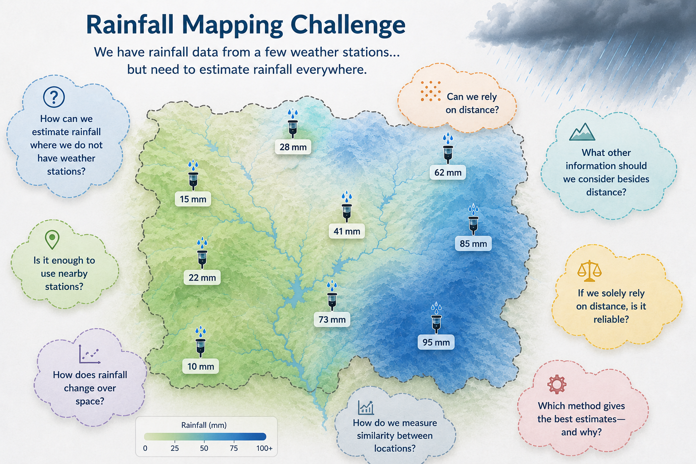
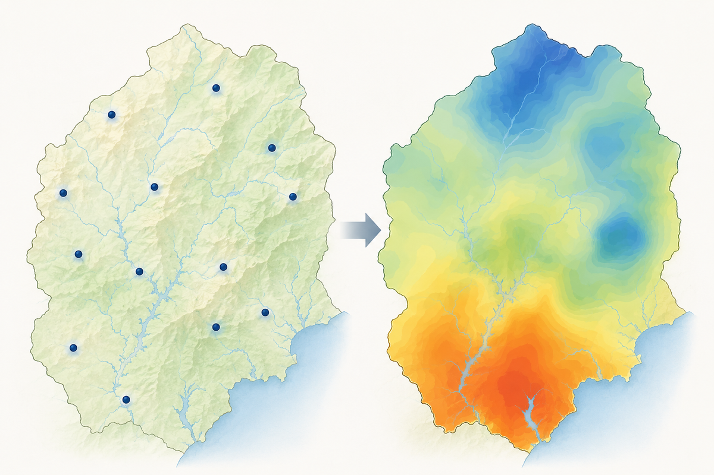
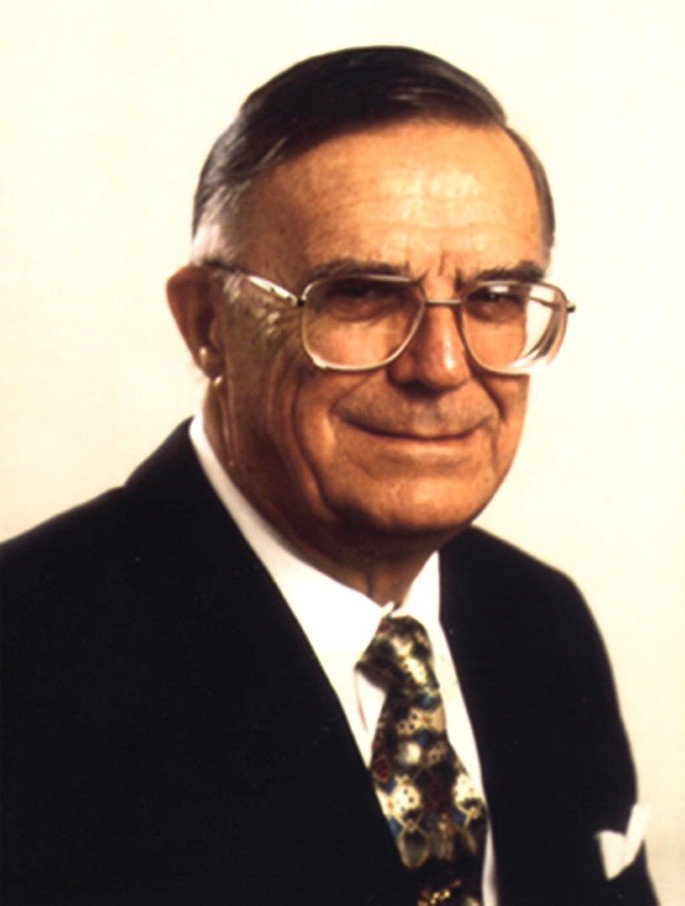

Is it enough to simply use the nearest stations? Should we only rely on distance, or are there deeper spatial patterns we need to consider?

Understand the core concept of geostatistical interpolation
See how spatial dependence improves prediction accuracy
Learn the workflow from variogram to prediction map
The process of predicting unknown values at unsampled locations based on measurements from known locations.
Deterministic interpolation estimates unknown values using mathematical rules based on nearby observations, relying on distance or smoothness assumptions.

Origins: Named after Danie G. Krige, a South African mining engineer in the 1950s who developed it to estimate gold ore grades from sparse samples.
Where IDW asks how far away each point is, Kriging asks how spatially related they are, how similar they are statistically, and how weights should be optimized to minimize prediction error.

Kriging minimizes prediction error variance. Among all possible linear unbiased estimators, kriging gives the most precise estimate.
Minimizes prediction error variance.
Prediction is a weighted sum of observed values, so Kriging remains mathematically interpretable.
Expected prediction error is zero — Kriging is statistically fair on average.
Ordinary Kriging assumes that within the local neighborhood of prediction, the underlying mean is constant but unknown.
Ordinary Kriging assumes local stability without requiring global uniformity. It avoids the unrealistic assumption of Simple Kriging (known global mean), while also avoiding the complexity of Universal Kriging (explicit trend modeling).
Nearby points should be more similar than distant points.
A major directional trend (e.g., temperature decreasing steadily with altitude) will make Ordinary Kriging underperform.
A meaningful variogram requires enough data to estimate spatial dependence reliably.
Designed for continuous numeric variables (rainfall, temperature, soil moisture).